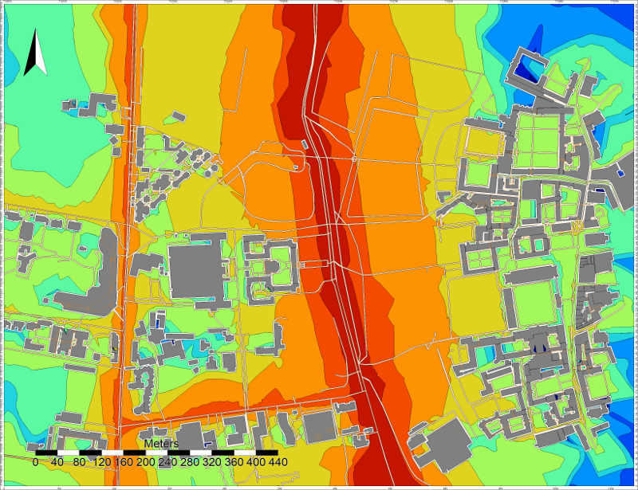

Noise Map from OSM - GUI
In this tutorial, we are going to produce a noise map, using OpenStreetMap (OSM) data. The exercice will be made through NoiseModelling with Graphic User Interface (GUI).
Prerequisites
You need at least NoiseModelling v.3.0.6; the best is always to use last release
We assume you already installed/configured Java and installed NoiseModelling. If not, follow Step 1 in “Get Started - GUI” page
Warning
If you have just finished the “Get Started - GUI” tutorial, please clean your database with the WPS block Clean_Database. Don’t forget to check the Are you sure check box before running the process.
Step 1: Get OSM data
Note
OpenStreetMap data can be downloaded in various formats. The main ones are .osm, .osm.gz and .osm.pbf (read more). For this example, we will use .osm.pbf file, which is a compressed version of .osm.
Download OSM data
Go to https://extract.bbbike.org/ website. This platform is built on top of OpenStreetMap database and allows you to extract data in a very simple way.
In the “Format” drop-down list, choose
Protocolbuffer (PBF)Give a name to the area you will download (this information is used to name your extraction request)
Enter your email, so that BBBike will be able to send you the download link once your data are ready (no data collection for commercial purpose).
Zoom in on the area you want to download (be careful, depending on the zoom level, the file you will get may be very heavy)
Click on the
hereicon to create the bounding box. If you click on the bbox, you can then make modification.When ready, click on
extractbutton.
In the email you will receive from BBBike, use the link to download your data. You will get a file called planet_xx.xx,xx.xx.osm.pbf
Warning
To avoid potential upcoming errors rename the file planet_xx.xx,xx.xx.osm.pbf to something simpler (e.g. my_area.osm.pbf).
Note
Developped by Wolfram Schneider, BBBike is a free of charge service (for non-professional purpose). If you like Wolfram’s job and wants to help him support the server costs, you are invited to donate.
Import to the database
To import the .pbf file into the NoiseModelling database, we use the Import_OSM WPS block (note that this block also allows to load .osm or .osm.gz files).
Target projection identifier: enter the corresponding SRID (see note below) (e.g.2154for french Lambert 93)Path of the OSM file: enter the adress of yourmy_area.osm.pbffile (e.g./home/noisemodelling/my_area.osm.pbf)If needeed, check the 4 other optionnal options
When ready, click on the green
Run Processbutton
Once done, three tables must be created: BUILDINGS, GROUND and ROADS
Note
About the Coordinate System (EPSG code)
In several input files, you need to specify coordinates, e.g road network. You can’t use the WGS84 coordinates (i.e. GPS coordinates). Acoustic propagation formulas make the assumption that coordinates are metric. Many countries and regions have custom coordinate system defined, optimized for usages in their appropriate areas. It might be best to ask some GIS specialists in your region of interest what the most commonly used local coordinate system is and use that as well for your data. If you don’t have any clue about what coordinate system is used in your region, it might be best to use the Universal Transverse Mercator coordinate system. This coordinate system divides the world into multiple bands, each six degrees width and separated into a northern and southern part, which is called UTM zones (see http://en.wikipedia.org/wiki/UTM_zones#UTM_zone for more details). For each zone, an optimized coordinate system is defined. Choose the UTM zone which covers your region (Wikipedia has a nice map showing the zones) and use its coordinate system.
Here is the map : https://upload.wikimedia.org/wikipedia/commons/e/ed/Utm-zones.jpg
{kind=link}
Warning
The current import script from OpenStreetMap may (in few specific cases) produce geometries incompatible with NoiseModelling. If an area has a problem, try to reduce the area. A much more robust version of this script will be available soon.
As OSM does not include data on road traffic flows, default values are assigned according to the “Good Practice Guide for Strategic Noise Mapping and the Production of Associated Data on Noise Exposure - Version 2”.
Step 2: Visualize OSM data
Now, to be sure that OSM data are corresponding to our need, we can take time to visualize them. To do so, we have various possibilities:
With NoiseModelling GUI
The contents of the database can be viewed using
Display_DatabaseWPS script.A spatial layer can be visualized using
Table_Visualization_MapWPS script.A data table can be visualized using
Table_Visualization_DataWPS script.
With H2 or DBeaver client
While NoiseModelling is open, if you are working with the default H2/H2GIS database, you can display your database in both the H2 / H2GIS web interface and DBeaver. To do so, just follow the Access NoiseModelling database page.
Export tables into files
Export a table: It is also possible to export the tables via
Export_TableWPS script, in Shapefile, CSV or GeoJSON format.View the files: Then open these files into your preferred Geographic Information System (e.g QGIS, OrbisGIS, …). You can then graphically visualize your geometries layer, but also the data contained in it. Take the time to familiarize yourself with your chosen GIS.
Add a background map: Most of the GIS allow you to add an WMS OSM background map: (see an example with QGIS)
Change colors: Most of the GIS allow you to change layer colors (e.g.
GROUNDlayer in green,BUILDINGSin gray,ROADSin red).
Step 3: Generate a Receiver table
The locations of noise level evaluation points needs to be defined.
Use Delaunay_Grid with the previously generated BUILDINGS table as the buildings table and ROADS as Sources table name.
Other parameters are optional.
Don’t forget to view your resulting layer in WPSBuilder or in your GIS to check that it meets your expectations.
This processing block will give the possibility to generate a noise map later.
Step 4: Associate emission noise level with roads
The Road_Emission_from_Traffic block is used to generate a road layer, called LW_ROADS, containing LW emission noise level values in accordance with the emission laws of the CNOSSOS model. The format of the input road layer can be found in the description of the WPS Block.
Don’t forget to view your resulting layers (see Step 2) to check that it meets your expectations.
Step 5: Source to Receiver Propagation
The Noise_level_from_source block allows to generate a layer of receiver points with associated sound levels corresponding to the sound level emitted by the sources (created table LW_ROADS) propagated to the receivers according to the CNOSSOS-EU. propagation laws.
Step 6: Create Isosurfaces map
Create an interpolation of levels between receivers points using the block Create_Isosurface.
Set LDEN_GEOM as Name of the noise table.
Step 7: View the result
Export
You can then export the output table CONTOURING_NOISE_MAP via Export_Table in Shapefile or GeoJSON format.
View
You can view this layer in your favorite GIS. You can then apply a color gradient on ISOLVL field; the noise level intervals are in ISOLABEL field.
